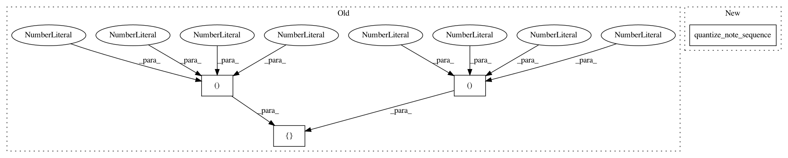

a146d001bf63734851d5a02c2b96d1ef29a61e96,magenta/music/sequences_lib_test.py,SequencesLibTest,testMultiTrack,#SequencesLibTest#,269
Before Change
[(12, 100, 1.0, 5.0), (19, 100, 2.0, 4.0), (24, 100, 3.0, 3.5)])
testing_lib.add_quantized_track_to_sequence(
self.expected_quantized_sequence, 0,
[(12, 100, 4, 16), (19, 100, 4, 12)])
testing_lib.add_quantized_track_to_sequence(
self.expected_quantized_sequence, 3,
[(12, 100, 4, 16), (19, 100, 8, 20)])
After Change
testing_lib.add_quantized_steps_to_sequence(
expected_quantized_sequence,
[(4, 16), (4, 12), (4, 16), (8, 20), (4, 20), (8, 16), (12, 14)])
quantized_sequence = sequences_lib.quantize_note_sequence(
self.note_sequence, self.steps_per_quarter)
self.assertProtoEquals(expected_quantized_sequence, quantized_sequence)
def testStepsPerBar(self):
qns = sequences_lib.quantize_note_sequence(
In pattern: SUPERPATTERN
Frequency: 3
Non-data size: 4
Instances
Project Name: tensorflow/magenta
Commit Name: a146d001bf63734851d5a02c2b96d1ef29a61e96
Time: 2016-11-15
Author: curtis@thefjord.org
File Name: magenta/music/sequences_lib_test.py
Class Name: SequencesLibTest
Method Name: testMultiTrack
Project Name: tensorflow/magenta
Commit Name: a146d001bf63734851d5a02c2b96d1ef29a61e96
Time: 2016-11-15
Author: curtis@thefjord.org
File Name: magenta/music/melodies_lib_test.py
Class Name: MelodiesLibTest
Method Name: testFromNotesPolyphonic
Project Name: tensorflow/magenta
Commit Name: a146d001bf63734851d5a02c2b96d1ef29a61e96
Time: 2016-11-15
Author: curtis@thefjord.org
File Name: magenta/pipelines/pipelines_common_test.py
Class Name: PipelineUnitsCommonTest
Method Name: testQuantizer